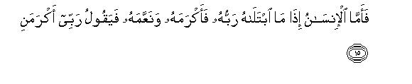
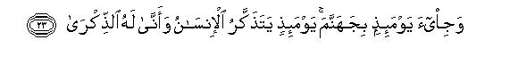
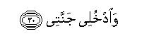

بسم الله الرحمن الرحيم
Sayyid Abul Ala Maududi - Tafhim al-Qur'an - The Meaning of the Qur'an
 89.
Surah Al Fajr (The Dawn)
89.
Surah Al Fajr (The Dawn)
The Surah is so designated after the word wal-fajr with which it opens.
Its contents show that it was revealed at the stage when persecution of the new converts to Islam had begun in Makkah. On that very basis the people of Makkah have been warned of the evil end of the tribes of Ad and Thamud and of Pharaoh.
Its theme is to affirm the meting out of rewards and punishments in the Hereafter, which the people of Makkah were not prepared to acknowledge, Let us consider the reasoning in the order in which it has been presented.
First of all, swearing oaths by the dawn, the ten nights, the even and the odd, and the departing night, the listeners have been asked: "Are these things not enough to testify to the truth of that which you are refusing to acknowledge?" From the explanation that we have given of these four things in the corresponding notes, it will become clear that these things are a symbol of the regularity that exists in the night and day, and swearing oaths by these the question has been asked in the sense: Even after witnessing this wise system established by God, do you still need any other evidence to show that it is not beyond the power of that God Who has brought about this system to establish the Hereafter, and that it is the very requirement of his wisdom that He should call man to account for his deeds?
Then, reasoning from man's own history, the evil end of the Ad and the Thamud and Pharaoh has been cited as an example to show that when they transgressed all limits and multiplied corruption in the earth, Allah laid upon them the scourge of His chastisement. This is a proof of the fact that the system of the universe is not being run by deaf and blind forces, nor is the world a lawless kingdom of a corrupt ruler, but a Wise Ruler is ruling over it, the demand of Whose wisdom and justice is continuously visible in the world itself in man's own history that He should call to account, and reward and punish accordingly, the being whom He has blessed with reason and moral sense and given the right of appropriation in the world.
After this, an appraisal has been made of the general moral state of human society of which Arab paganism was a conspicuous example; two aspects of it in particular, have been criticized: first the materialistic attitude of the people on account of which overlooking the moral good and evil, they regarded only the achievement of worldly wealth, rank and position, or the absence of it, as the criterion of honor or disgrace, and had forgotten that neither riches was a reward nor poverty a punishment, but that Allah is trying man in both conditions to see what attitude he adopts when blessed with wealth and how he behaves when afflicted by poverty. Second, the people's attitude under which the orphan child in their society was left destitute on the death of the father. Nobody asked after the poor; whoever could, usurped the whole heritage left by the deceased parent, and drove away the weak heirs fraudulently. The people were so afflicted with an insatiable greed for wealth that they were never satisfied however much they might hoard and amass. This criticism is meant to make them realize as to why the people with such an attitude and conduct in the life of the world should not be called to account for their misdeeds.
The discourse has been concluded with the assertion that accountability shall certainly be held and it will be held on the Day when the Divine Court will be established. At that time the deniers of the judgment will understand that which they are not understanding now in spite of instruction and admonition, but understanding then will be of no avail. The denier will regret and say, "Would that I had provided for this Day beforehand while I lived in the world." But his regrets will not save him from Allah's punishment. However, as for the people who would have accepted the Truth, which the heavenly books and the Prophets of God were presenting, with full satisfaction of the heart in the world, Allah will be pleased with them and they will be well pleased with the rewards bestowed by Allah. They will be called upon to join the righteous and enter Paradise.

In the name of Allah, the Compassionate, the Merciful.

[1-5] By the dawn, and the ten nights, and the even and the odd, and the night when it departs! Is there in it an oath for a man of sense?1

[6-14] Have you2 not seen how your Lord dealt with `Ad Iram of lofty pillars,3 the like of whom no nation was created in the lands of the world?4 And with Thamud who had hewed out the rocks in the valley?5 And with Pharaoh of the stakes.6 These were those who had committed great excesses in the lands of the world and spread great mischief in them. Consequently, your Lord let loose on them a scourge of the torment. Indeed, your Lord is ever lying in ambush.7



[15-26] As for man,8 whenever his Lord tries him and honors and blesses him, he says, "My Lord has honored me." But when He tests him and restricts his provisions for him,. he says, "My Lord has disgraced me."9 Indeed not!10 But you do not treat the orphan with respect,11 and you do not urge one another to feed the poor,12 and you devour the whole inheritance greedily,13 and you love the wealth with all yow hearts.14 Indeed not!15 When the earth is incessantly pounded to become a sand-desert. and your Lord comes16 while the angels shall be standing in ranks, and Hell on that Day is brought within sight, on that Day shall man understand, but what will understanding avail him then?17 He will say, "Would that I had provided in advance for this life of mine!" Then none can punish as Allah shall punish on that Day, and none can bind as Allah shall bind.



[27-30] (To the righteous it will be said: ) "O peaceful and fully satisfied soul,18 return to your Lord.19 You are well-pleased (with your good end) and well-pleasing (in the sight of your Lord). Join My (righteous) servants and enter My Paradise."
1Much difference of opinion has been expressed by the commentators in the commentary of these verses, so much so that in respect of "the even and the odd" there are as many as 36 different views. In some traditions the commentary of these verses has also been attributed to the Holy Prophet (upon whom be peace), but the fact is that no commentary is confirmed from him, otherwise it was not possible that anyone from among the Companions, their immediate successors, and later commentators would have dared to determine the meaning of these verses by himself after the commentary by the Holy Prophet.
After a study of the style one clearly feels that there was an argument already in progress in which the Holy Prophet (upon whom be peace) was presenting some thing and the disbelievers were denying it. At this, affirming what the Holy Prophet presented, it was said: By such and such a thing", so as to say: "By these things, what Muhammad (upon whom be Allah's peace and blessings) says is wholly based on the truth. Then, the argument is concluded with the question: "Is there an oath in it for a man of understanding ?" That is, "is there need for yet another oath to testify to the truth of this matter ''" Is this oath not enough to persuade a sensible man to accept that which Muhammad (upon whom be Allah's peace and blessings) is presenting?"
Now the question arises: what was the argument for the sake of which an oath was sworn by these four things? For this we shall have to consider the whole theme which, in the following verses, commences with: "Have you not seen how your Lord dealt with the 'Ad" and continues till the end of the Surah. It shows that the argument concerned the rewards and punishments of the Hereafter, which the people of Makkah were refusing to acknowledge and the Holy Messenger (upon whom be peace) was trying to convince them of this by constant preaching and instruction. At this oaths were sworn by the dawn, the ten nights, the even and the odd, and the departing night to assert: Are these four things not enough to convince a sensible man of the truth of this matter so that he may need yet another evidence for it?
After having determined the significance of these oaths in the context, we would inevitably have to take each of these in the meaning relevant to the subsequent theme. First of all, it is said: "By Fajr." Fajr is the breaking of day, i.e. the time when the first rays of the light of day appear in the midst of the darkness of night as a white streak from the east. Then, it is said: "By the ten nights." If the context is kept in view, it will become plain that it implies each group of the ten nights among the thirty nights of the month, the first ten nights being those during which the crescent moon starting as a thin nail. goes on waxing every night until its major portion becomes bright; the second group of the ten nights being those during which the greater part of the night remains illumined by the moon, and the last ten nights being those during which the moon goes on waning and the nights becoming more and more dark until by the end of the month the whole night becomes absolutely dark. Then, it is said : "By the even and the odd." Even is the number which is divisible into two equal parts, as 2, 4, 6, 8, and the odd the number which is not so divisible, as l, 3, 5, 7. Generally, it may imply everything in the universe, for things in the universe either exist in pairs or as singles. But since the context here concerns the day and the night, the even and the odd mean the alternation of day and night in the sense that the dates of the month go on changing from the first to the second, and from second to the third, and every change brings with it a new state. Last of all, it is said: "By the night when it is departing", i.e. when the darkness which had covered the world since sunset may be at the verge of disappearing and the day be dawning.
Now let us consider as a whole the four things an oath by which has been sworn to assert that the news which Muhammad (upon whom be Allah's peace and blessings) is giving of the meting out of rewards and punishments is wholly based on the truth. All these things point to the reality that an all-Powerful Sustainer is ruling over this universe, and nothing of what He is doing is absurd, purposeless, or lacking wisdom; on the contrary, a wise plan clearly underlies whatever He does. In His world one will never see that while it is night, the midday sun should suddenly appear overhead, or that the moon should appear one evening in the shape of the crescent and be followed next evening by the full moon, or that the night, when it falls, should never come to an end, but should become perpetual, or that there should be no system in the alternation of the day and night so that one could keep a record of the dates and know what month was passing, what was the date, on what date a particular work is to begin, and when it is to finish, what are the dates of the summer season and what of the rainy or winter season. Apart from countless other things of the universe if man only considers this regularity of the day and night intelligently and seriously, he will find evidence of the truth that this relentless discipline and order has been established by an Omnipotent Sovereign God; with it are connected countless of the advantages of the creatures whom He has created on the earth. Now, if a person living in the world of such a Wise, Omnipotent and All-Mighty Creator denies the rewards and punishments of the Hereafter, he inevitably commits one of the two errors: either he is a denier of His powers and thinks that though He has the power to create the universe with such matchless order and discipline, He is powerless to recreate man and mete out rewards and punishments to him or he denies His wisdom and knowledge and thinks that although He has created man with intellect and powers in the world, vet He will neither ever call him to account as to how he used his intellect and his powers, nor will reward him for his good deeds, nor punish him for his evil deeds. The one who believes in either, is foolish in the extreme.
2After reasoning out the judgment from the system of day and night, now an argument is berg given from man's own history for its being a certainty The mention of the conduct of a few well known tribes of history and their ultimate end is meant to point out that the universe is not working under some deaf and blind law of nature, but a Wise God is ruling over it, and in the Kingdom of that God only one law, which man describes as the law of nature is not working, but a moral law also is operative, which necessarily calls for retribution and rewards and punishments. The results of the working of the law have been appearing over and over again even in this world, which point out to the people of understanding as to what is the nature of the Kingdom of the Universe. Any nation which carved out a system of life for itself heedless of the Hereafter and of the rewards and punishments of God, was ultimately corrupted and depraved, and whichever nation followed this way, was eventually visited with the scourge of punishment by the Lord of the universe. This continuous experience of man's own history testifies to two things clearly:
(1) That denial of the Hereafter has been instrumental in corrupting every nation and sending it ultimately to its doom; therefore, the Hereafter indeed is a reality clashing with which leads, as it has always led, to the same inevitable results; and
(2) that retribution for deeds will at some time in the future take place in its full and complete form also, for the people who touched the extreme limits of corruption and depravity and were visited with punishment had been preceded be many others who had sown seeds of corruption for centuries and left the world without being visited by any scourge.
The justice of God demands that all those people also should be called to account at some time and they too should suffer for their misdeeds. (Argument from history and morals for the Hereafter has been given at many places in the Qur'an and we have explained it everywhere accordingly. For example, see E.N.'s 5, 6 of AI-A'raf, E.N. 12 of Yunus,, E.N.'s 57, 105, 115 of Hud, E.N. 9 of Ibrahim, E.N.'s 66, 86 of An-Naml, E.N. 8 of Ar-Rum E.N. 25 of Saba, E.N.'s 29. 30 of Suad, E.N. 80 of Al-Mu'min, E.N.'s 33, 34 of Ad-Dukhan, E.N.'s 27, 28 of Al-Jathiah, E.N. 17 of Qaf, E.N. 21 of Adh-Dhariyat).
3`Ad Iram implies the ancient tribe of `Ad, who have been called 'Ad Ula in the Qur'an and Arabian history. In Surah An-Najm, it has been said: "And that We destroyed the ancient people of `Ad" (v. 50), i.e. the `Ad to whom the Prophet Hud had been sent, and who were punished with a scourge. As against thetas the people of `Ad who retrained safe and flourished afterwards are remembered as Ad Ukhra in Arabian history. The ancient `Ad are called Ad lram for the reason that they belonged to that branch of the Semetic race which descended from Iram son of Shem son of Noah (peace be upon him). Several other sub-branches of this main branch are well known in history one of which were the Thamud, who have been mentioned in the Qur'an; another are the Aramaeans, who in the beginning inhabited the northern parts of Syria and whose language Aramaic occupies an important place among the Semetic languages.
The words dhat-ul-`imad (of lofty pillars) have been. used for the 'Ad because they built high buildings and the pattern of architecture of erecting edifices on lofty pillars was introduced by them in the world. At another place in the Qur'an this characteristic has been mentioned in connection with the Prophet Hud, who said to them: "What, you erect for mere pleasure a monument on every high spot, and build huge castles as if you were immortal!" (Ash-Shu`ara': 128-129).
4That is, they were a matchless people of their time; no other nation in the world compare with them in strength, glory and grandeur. At other places in the Qur'an, it has been said about them: "Your Lord made you very robust." (Al-A`raf: 69) "As for the `Ad, they became arrogant with pride in the land, without any right, and said: `Who is stronger than us in might"? (Ha Mim As-Sajdah: 15). "When you seized somebody, you seized him like a tyrant." (Ash-Shu`ara' 130)
5"The valley": Wad-il-Qura, where the Thamud carved out dwellings in the mountains, and probably in history they were the first people who started cutting out such buildings into the rocks. (For details, see E.N.'s 57, 59 of Al A'raf, E.N. 45 of Al-Hijr, E.N.'s 95, 99 of Ash-Shu`ara' along with the photographs) .
6The words dhul-autad (of the stakes) for Pharaoh have also been used in Surah Suad: 12 above. This can have several meanings. Possibly his forces have been compared to the stakes, and "of the stakes" means "of great forces", for it was by their power and might that he ruled a firmly established kingdom; it might also imply multiplicity of forces and the meaning be that wherever his large armies camped, pegs of the tents were seen driven into the ground on every side; it may also imply the stakes at which he punished the people, and it is also possible that the pyramids of Egypt have been compared to the stakes, for they are the remnants of the grandeur and glory of the Pharaohs, and seem to have been driven into the ground like stakes for centuries.
7The words "ever lying in ambush" have been used metaphorically for keeping watch on the movements and activities of the wicked and mischievous people. An ambush is a place where a person lies hiding in wait to attack somebody by surprise. The victim, thoughtless of his fate, comes and falls a prey. The same is the case against Allah of those wicked people who spread mischief in the world and have no sense and tear that there is God above them, Who is watching all their misdeeds. Therefore, they go on committing everyday more and more evils fearlessly until they reach the limit which Allah does not permit them to transgress. At that very moment His scourge descends upon them suddenly.
8Now, criticizing the general moral state of the people, it is being said: "After all, why shouldn't the men who have adopted such an attitude in the life of the world, be ever called to account, and how can it be regarded as a demand of reason and justice that when man has left the world, after doing all he could, he should never receive any reward or suffer any punishment for his deeds?"
9This then is man's materialistic view of life. He regards the wealth and position and power of this world alone as everything. When he has it, he is filled with pride and says God has honored me; and when he fails to obtain it, he says: God has humiliated me. Thus, the criterion of honor and humiliation in his sight is the possession of wealth and position and power, or the absence of it, whereas the actual truth which he does not understand is that whatever Allah has given anybody in the world has been given for the sake of a trial. If he has given him wealth and power, it has been given for a trial to see whether he becomes grateful for it, or commits ingratitude. If he has made him poor, in this too there is a trial for him to see whether he remains content and patient in the will of God and faces his hardships bravely within permissible bounds, or becomes ready to transgress every limit of morality and honesty and starts cursing his God.
10That is, this is not all the criterion of honor and disgrace, for the real criterion is the moral good and evil.
11That is, "As long as his father is alive, your treatment of him is attentive and when his rather dies, even the paternal and maternal uncles and the elder brothers, to say nothing of the neighbors and distant relatives, neglect him."
12That is, "Nobody in your society feels any urge to feed the poor. Neither a man himself feels inclined to feed a hungry person, nor is there among the people any urge to do something to satisfy the hunger of the hungry, nor do they exhort one another to do so."
13In Arabia, the women and children were as a rule deprived of inheritance and the people's idea in this regard was that the right to inheritance belonged only to those male members who were fit to fight and safeguard the family. Besides, the one who was more powerful and influential among the heirs of the deceased, would annex the whole inheritance without qualms, and usurp the shares of all those who did not have the power to secure their shares. They did not give any importance to the right and duty so that they should honestly render the right to whom it was due as a duty whether he had the power to secure it or not.
14That is, "You have no regard for the permissible or the forbidden, the lawful or the unlawful. You feel no qualms about acquiring wealth in any way or by any means, fair or foul, and your greed is never satisfied however much you may have acquired and amassed. "
15That is, "You are wrong in thinking that you may do whatever you like in your life of the world, but you will never be called to account for it. The meting out of rewards and punishment denying which you have adopted this mode of life, is not anything impossible and fictitious, but it has to come to pass and it will certainly come to pass at the time being mentioned below."
16Although literally the words jaa Rabbuka mean "your Lord will come", obviously there cannot be any question of Allah Almighty's moving from one place to another; therefore, this will inevitably have to be understood as an allegoric expression, which is meant to give an idea that at that time the manifestations of Allah Almighty's power and His majesty and sovereignty will appear fully, as, for example, in the world the arrival of a king in person in the court is more awe-inspiring than the mere array of his forces and chiefs and nobles.
17The words in the original can have two meanings:
(1) That on that Day man will remember whatever he had done in the world and will regret, but what will remembrance and regretting avail him then?
(2) That on that Day man will take heed and accept admonition: he will realize that whatever he had been told by the Prophets was true and he committed a folly when he did not listen to them; but what will taking heed and accepting the admonition and realizing one's errors avail one then?
18"Peaceful .. satisfied soul": the man who believed in Allah, the One, as his Lord and Sustainer, and adopted the Way of Life brought by the Prophets as his way of life, with full satisfaction of the heart, and without the least doubt about it, who acknowledged as absolute truth whatever creed and command he received from Allah and His Messenger, who withheld himself from whatever he was forbidden by Allah's Religion, not unwillingly but with perfect conviction that it was really an evil thing, who offered without sacrifice whatever sacrifice was required to be offered for the sake of the truth. who endured with full peace of mind whatever difficulties, troubles and hardships he met on this way and who felt no remorse on being deprived of the gains and benefits and pleasures in the world which seemed to accrue to those who followed other ways but remained fully satisfied that adherence to true Faith had safeguarded him against those errors. This very state has been described at another place in the Qur'an as sharh Badr. (Al-An'am 125)
19This he will be told at the time of his death as well as on the Day of Resurrection when he will rise from the dead and move towards the Plain of Assembly and also on the occasion when he will be presented in the Divine Court; at every stage he will be assured that he is moving towards the Mercy of Allah Almighty.